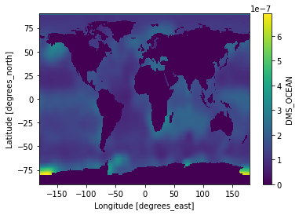
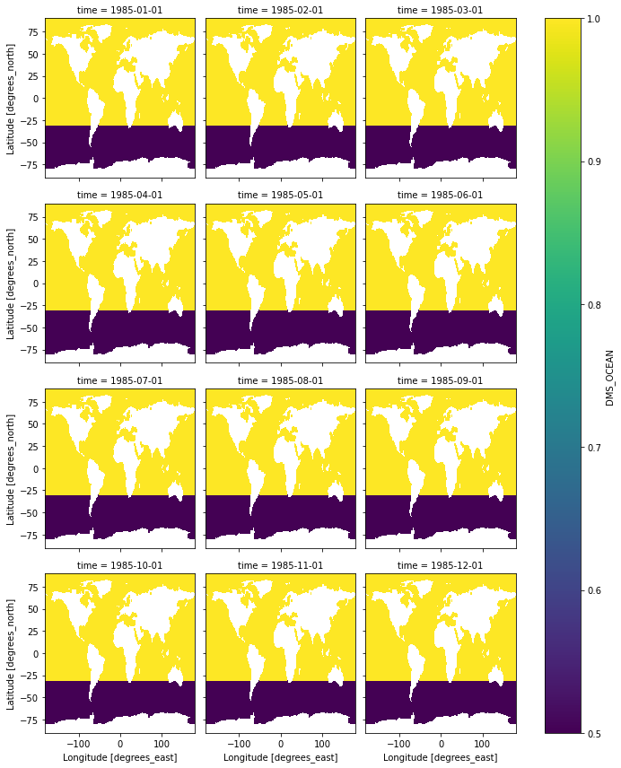

Scaling a Subset of Input Data in NetCDF Format
Reference:
For general python handling of nc files using Xarray: http://xarray.pydata.org/en/stable/index.html
I am working on a set of input data of Ocean DMS concentration. I suspect the reported values over the Southern Ocean (vaguely defined as ocean south to 30ºS) is a bit high. I want to reduce those values by 50% to see if my model will match observations better.
Surprisingly, I didn’t find a quick way to do it. Here I present a work-a-round. (Please let me know if you have a smarter way.)
import wget # for downloading data via URL links
import xarray as xr # the major tool to work with NetCDF data!
from matplotlib import pyplot as plt # for plotting
Open the monthly Ocean DMS nc file
The marine DMS data used in this example can be downloaded here. Or, we can download it from Python.
wget.download('http://rain.ucis.dal.ca/ctm/HEMCO/DMS/v2015-07/DMS_lana.geos.1x1.nc')
'DMS_lana.geos.1x1.nc'
We will use the function xr.open_dataset from the xarray package.
ds = xr.open_dataset('DMS_lana.geos.1x1.nc')
ds # display the dataset
<xarray.Dataset> Dimensions: (lat: 181, lon: 360, time: 12) Coordinates:
- lon (lon) float32 -180.0 -179.0 -178.0 -177.0 … 177.0 178.0 179.0
- lat (lat) float32 -89.75 -89.0 -88.0 -87.0 … 87.0 88.0 89.0 89.75
- time (time) datetime64[ns] 1985-01-01 1985-02-01 … 1985-12-01
Data variables:
DMS_OCEAN (time, lat, lon) float32 …
Attributes:
CDI: Climate Data Interface version 1.6.4 (http://code.zmaw.de/p...
Conventions: COARDS
history: Mon Jul 20 16:29:35 2015: ncatted -O -a units,DMS_OCEAN,o,c…
Title: COARDS/netCDF file created by BPCH2COARDS (GAMAP v2-17+)
Format: NetCDF-3
Model: GEOS5_47L
Delta_Lon: 1.0
Delta_Lat: 1.0
NLayers: 47
Start_Date: 19850101
Start_Time: 0
End_Date: 19850201
End_Time: 0
Delta_Time: 744
CDO: Climate Data Operators version 1.6.4 (http://code.zmaw.de/p...xarray.Dataset
- lat: 181
- lon: 360
- time: 12
- lon(lon)float32-180.0 -179.0 … 178.0 179.0
- standard_name :
- longitude
- long_name :
- Longitude
- units :
- degrees_east
- axis :
- X
array([-180., -179., -178., …, 177., 178., 179.], dtype=float32)
- lat(lat)float32-89.75 -89.0 -88.0 … 89.0 89.75
- standard_name :
- latitude
- long_name :
- Latitude
- units :
- degrees_north
- axis :
- Y
array([-89.75, -89. , -88. , -87. , -86. , -85. , -84. , -83. , -82. , -81. , -80. , -79. , -78. , -77. , -76. , -75. , -74. , -73. , -72. , -71. , -70. , -69. , -68. , -67. , -66. , -65. , -64. , -63. , -62. , -61. , -60. , -59. , -58. , -57. , -56. , -55. , -54. , -53. , -52. , -51. , -50. , -49. , -48. , -47. , -46. , -45. , -44. , -43. , -42. , -41. , -40. , -39. , -38. , -37. , -36. , -35. , -34. , -33. , -32. , -31. , -30. , -29. , -28. , -27. , -26. , -25. , -24. , -23. , -22. , -21. , -20. , -19. , -18. , -17. , -16. , -15. , -14. , -13. , -12. , -11. , -10. , -9. , -8. , -7. , -6. , -5. , -4. , -3. , -2. , -1. , 0. , 1. , 2. , 3. , 4. , 5. , 6. , 7. , 8. , 9. , 10. , 11. , 12. , 13. , 14. , 15. , 16. , 17. , 18. , 19. , 20. , 21. , 22. , 23. , 24. , 25. , 26. , 27. , 28. , 29. , 30. , 31. , 32. , 33. , 34. , 35. , 36. , 37. , 38. , 39. , 40. , 41. , 42. , 43. , 44. , 45. , 46. , 47. , 48. , 49. , 50. , 51. , 52. , 53. , 54. , 55. , 56. , 57. , 58. , 59. , 60. , 61. , 62. , 63. , 64. , 65. , 66. , 67. , 68. , 69. , 70. , 71. , 72. , 73. , 74. , 75. , 76. , 77. , 78. , 79. , 80. , 81. , 82. , 83. , 84. , 85. , 86. , 87. , 88. , 89. , 89.75], dtype=float32)
- time(time)datetime64[ns]1985-01-01 … 1985-12-01
- standard_name :
- time
- long_name :
- Time
array(['1985-01-01T00:00:00.000000000', '1985-02-01T00:00:00.000000000', '1985-03-01T00:00:00.000000000', '1985-04-01T00:00:00.000000000', '1985-05-01T00:00:00.000000000', '1985-06-01T00:00:00.000000000', '1985-07-01T00:00:00.000000000', '1985-08-01T00:00:00.000000000', '1985-09-01T00:00:00.000000000', '1985-10-01T00:00:00.000000000', '1985-11-01T00:00:00.000000000', '1985-12-01T00:00:00.000000000'], dtype='datetime64[ns]')
- DMS_OCEAN(time, lat, lon)float32…
- long_name :
- Ocean DMS concentration
- units :
- kg/m3
[781920 values with dtype=float32]
- CDI :
- Climate Data Interface version 1.6.4 (http://code.zmaw.de/projects/cdi)
- Conventions :
- COARDS
- history :
- Mon Jul 20 16:29:35 2015: ncatted -O -a units,DMS_OCEAN,o,c,kg/m3 tmp3.nc Mon Jul 20 16:29:34 2015: cdo mulc,6.213e-8 tmp2.nc tmp3.nc Mon Jul 20 16:29:34 2015: cdo chname,BIOGSRCE__DMSOCN,DMS_OCEAN tmp.nc tmp2.nc Mon Jul 20 16:29:34 2015: cdo mergetime tmp.1985*.nc tmp.nc
- Title :
- COARDS/netCDF file created by BPCH2COARDS (GAMAP v2-17+)
- Format :
- NetCDF-3
- Model :
- GEOS5_47L
- Delta_Lon :
- 1.0
- Delta_Lat :
- 1.0
- NLayers :
- 47
- Start_Date :
- 19850101
- Start_Time :
- 0
- End_Date :
- 19850201
- End_Time :
- 0
- Delta_Time :
- 744
- CDO :
- Climate Data Operators version 1.6.4 (http://code.zmaw.de/projects/cdo)
We can also visualize annual mean of the data for a quick check:
ds['DMS_OCEAN'].mean(dim=['time']).plot()
<matplotlib.collections.QuadMesh at 0x7fd5c840ad00>

Scaling down the Southern Ocean DMS
As mentioned, we want to scale down the ocean DMS below 30ºS.
# Step 1: make two copies of the data set, one for grid cells with lat > 30ºS, one for <30ºS
dms_above30S = ds['DMS_OCEAN'].sel(lat=slice(-30,90))
dms_below30S = ds['DMS_OCEAN'].sel(lat=slice(-90,-30-1e-9)) # we add a small value here to avoid the grid cells with lat = 30ºS to appear in both data sets.
# Step 2: reduce the DMS in the dataset of interest by 50%
dms_below30S = dms_below30S * 0.5
# Step 3: merge the untouched and scaled data
ds_partly_scaled = xr.merge([dms_below30S, dms_above30S], compat="no_conflicts")
To ensure our exercise is correct, let’s make some plots to compare the DMS concentrations in ds_partly_scaled and the original dataset, ds.
(ds_partly_scaled['DMS_OCEAN'] / ds['DMS_OCEAN']).plot(col='time', col_wrap=3)
<xarray.plot.facetgrid.FacetGrid at 0x7fd5c85d2f10>

Yellow = 1 (untouched); Purple = 0.5 (scaled). Mission accomplished!
Finally, save the scaled DMS in a new file
And, it’s one-line easy.
ds_partly_scaled.to_netcdf('DMS_lana.geos.1x1.SouthernHalved.nc') # always good to have a descriptive name
Again, it’s likely not the best way. Please let me know if you have a smarter way. I am always open to learn!
Ka Ming FUNG
Postdoctoral Associate
Earth System Scientist studying food security, air pollution, and environmental health under climate change